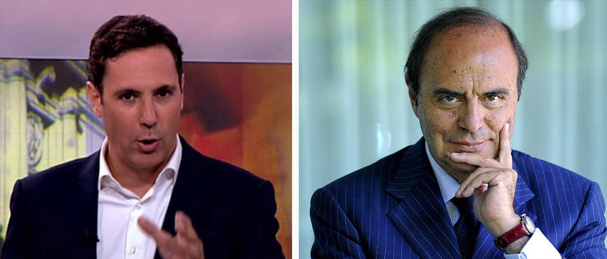
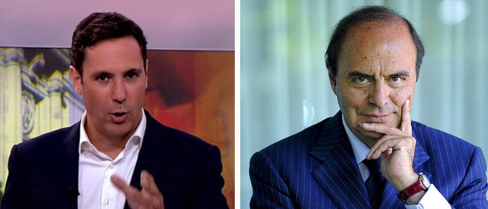
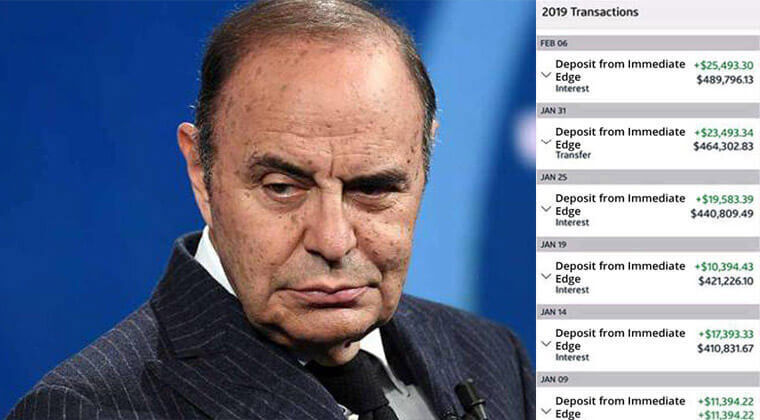

L'ultima trovata di Bruno Vespa consiste in un nuovo investimento segreto in grado di arricchire centinaia di italiani

L'ultima trovata di Bruno Vespa consiste in un nuovo investimento segreto in grado di arricchire centinaia di italiani
(La Repubblica) - Bruno Vespa sta rendendo milionarie le persone che vivono in Italia, ma il governo sta cercando fermarlo. Recentemente, è stato annunciato che Bruno Vespa, il famoso giornalista e personaggio televisivo, ha investito milioni di euro in una nuova app rivoluzionaria, che sta guadagnare mediamente 29.000 euro al mese agli italiani.
Il suo ultimo investimento ha coinvolto le grandi banche italiane, in particolare UniCredit, BMPS e Intesa Sanpaolo, facendo pressione sul governo italiano per colmare la lacuna e regolare la società che sta guadagnando milioni di italiani in reddito esente da imposte.
Lo zio Bruno afferma che con un piccolo investimento di 250 euro gli utenti possono aspettarsi rendimenti superiori al 10,000% in pochi mesi. La piattaforma si chiama 'Immediate Edge' e ad oggi, l'utente medio in Italia guadagna circa 29.000 euro al mese con reclami di alcuni clienti che diventano addirittura milionari.
"Le criptovalute mi hanno sempre interessato da quando ho scoperto la loro esistenza qualche anno fa. Non ho mai prestato molta attenzione ai media tradizionali, specialmente quando spaventavano le persone e dicevano che la cripto moneta era una moda e che sarebbe svanita. La verità è che, da quando è stata inventata, la criptomoneta è stato il modo migliore per guadagnare denaro nel 21° secolo.
È abbastanza ovvio il motivo per cui le banche sono così contrarie e si riduce a una sola parola... PAURA!
Sono terrorizzati dal fatto che le persone che prelevano il loro denaro dal sistema bancario e investono in qualcosa da cui non possono trarre profitto.
Inizialmente ero scettico, prima di provare la piattaforma, stavo facendo trading di criptovalute da oltre un anno e non mi sono mai imbattuto in un software così automatizzato che fa tutto per te. Ma dopo aver depositato il minimo di 250€ sul mio conto e dopo la registrazione, i risultati nel primo giorno hanno dimostrato che il prodotto ha avuto davvero un grande successo.
Ho fatto personalmente circa 800.000 euro utilizzando Immediate Edge come potete vedere dal mio account.”
Bruno Vespa procedeva a tirare fuori il suo telefono e a mostrarci il suo conto corrente in tempo reale.
"Ho deciso di dimostrare in diretta TV che questo software funziona e invito davvero le persone a provarlo da sole prima che l'opportunità se ne vada, e il governo approvi nuove leggi per regolamentare aziende come Immediate Edge.”
"So che provare qualcosa di nuovo fa paura. E la maggior parte della gente ha sentito dire che le cripto sono solo una moda. Ma la verità è che sono le Grandi Banche a diffondere queste voci. Stanno perdendo un sacco di soldi a causa delle cripto, ecco perché faranno tutto il necessario per screditarle e spingere la gente a non investire. Più le persone si rendono conto di quanto sia facile fare soldi con le cripto, più clienti perdono. Semplicemente non c'è nessun altro investimento che possa offrire un rendimento del 10,000% con soli 250 euro.”

L'idea alla base di Immediate Edge è semplice: Permettere alla persona media di monetizzare il boom della criptomoneta che è ancora l'investimento più lucrativo del 21° secolo, nonostante quello che la maggior parte della gente vuole che si pensi.
Molte persone dicono che la moneta virtuale è crollata nel 2017, ma ora sono le stesse persone che dicono che le cripto sono tornate in crescita e più forti che mai. Dalla fine del 2018, la crittografia ha visto un aumento di valore di oltre il 10,000%. Si prevede che tale numero raddoppierà entro la fine dell'anno. Ecco perché alcuni dei migliori economisti della nazione stanno ora esortando la gente a investire nelle criptovalute.
"Più a lungo qualcuno aspetta di investire, più soldi NON riescono a fare", dice Michael Constance di Bloomberg.
Immediate Edge è completamente automatizzato e alimentato da un algoritmo software unico che alcune delle menti tecnologiche più brillanti del settore hanno contribuito a creare. Fa tutto il lavoro di compravendita per voi. Basta investire una piccola somma di 250 euro e vedere le finanze raggiungere livelli mai immaginati.
Ci sono migliaia di valute attualmente scambiate su molte piattaforme diverse, proprio come il trading di azioni o Forex.
Immediate Edge guadagna da tutte queste numerose valute criptate, anche in un mercato ribassista, il che significa che si fanno soldi sia quando le valute stanno salendo, sia quando scendono, il che equivale alla "vendita allo scoperto" di un'azione.
Ciò significa che si fanno soldi 24/7 senza dover fare altro che sedersi e guardare l'algoritmo del software fare il suo lavoro.
I rapporti dei moghul tecnologici e dei grandi imprenditori come Bill gates, Richard Branson & Elon Musk che investono i propri soldi nell'app sono stati diffusi.
Dopo anni di perfezionamento della piattaforma, siamo estremamente lieti di poter rilasciare Immediate Edge al pubblico e la performance è stata addirittura migliore di quanto ci aspettassimo" ha detto Bill Gates.
 Bill Gates, Elon Musk e Richard Branson discutono di Immediate Edge al CES 2019.
Bill Gates, Elon Musk e Richard Branson discutono di Immediate Edge al CES 2019.
Questi geni della tecnologia hanno costruito aziende multimiliardarie basate sulla soluzione di problemi complessi come i pagamenti online, l'informatica e i trasporti. Ora, stanno affrontando il problema globale della disuguaglianza di ricchezza permettendo a chiunque - non importa quanto ricco o povero sia - di fare abbastanza soldi per godere di una vita felice e appagante.
"La libertà finanziaria è qualcosa che credo che ogni individuo abbia il diritto di avere" ha dichiarato Elon Musk.
Zio Bruno continua:
Mai nella storia abbiamo avuto un'opportunità così straordinaria che la gente comune può facilmente sfruttare per generare una ricchezza enorme in così poco tempo.
Alcune persone esitano a provarlo perché è nuovo e qualcosa a cui non sono abituati, e le grandi banche stanno lavorando sodo per coprirlo! Basta guardare i media che hanno colpito la cripto moneta nel corso degli anni.
UniCredit, BMPS e Intesa Sanpaolo stanno attivamente creando propaganda e chiamando piattaforme di crittovaluta come Immediate Edge una truffa. Perché'? Sono preoccupati che i loro profitti aziendali si ridurranno una volta che i loro clienti sapranno come creare essi stessi una ricchezza massiccia.
Jamie Dimon, CEO di JPMorgan Chase Bank, la più grande banca degli Stati Uniti, ha dichiarato più volte che la moneta virtuale era una moda e che la gente stava investendo nel "far credere" il denaro invisibile. Era costantemente alla ricerca di una valuta criptata....... poi all'inizio del 2019 rilascia una valuta criptata che ha chiamato moneta JPM dalla JPMorgan Chase Bank!
Una coincidenza? Non credo proprio.
La verità è che la moneta criptata è la rivoluzione della nostra vita e chi non coglie questa opportunità sta perdendo un’occasione.
Sto condividendo questo perché ho anche ricevuto centinaia di e-mail da persone che mi ringraziano per aver condiviso questo segreto. Il mio preferito è quello di un giovane uomo che ha comprato al fratello minore la macchina dei suoi sogni - una Ferrari 488 Pista usando i soldi che ha guadagnato da Immediate Edge. Questa piattaforma sta davvero migliorando un po' la vita di tutti nel mondo".
I nostri redattori senior non ci hanno permesso di pubblicare l'intervista con Bruno Vespa fino a quando non abbiamo verificato che Immediate Edge è una legittima opportunità di guadagno da casa.
Così il nostro team editoriale ha testato Immediate Edge per assicurarsi che funzioni effettivamente come descritto da zio Bruno. Uno dei nostri editori online, Matteo Marchetti si è offerto volontario per rischiare i propri soldi e testare Immediate Edge.
Matteo è un padre di 51 anni, di due figlie con la moglie Rosa che è un'infermiera. Sia Matteo che Rosa non hanno mai avuto alcuna esperienza di investimento o di trading di cripto ma Matteo era ansioso di provare Immediate Edge dopo aver ascoltato l'intervista dello zio Bruno.

"Originariamente, fare soldi da casa era solo un sogno, ma ho deciso di provare comunque, dato il mio contesto finanziario - e per il bene del buon giornalismo.
Ho guardato un video introduttivo sulla piattaforma e poi mi sono iscritto. Il video sembrava troppo promettente, ma ho messo da parte il mio scetticismo. Nel giro di poche ore, ho ricevuto una chiamata dal mio 'investitore personale' che Immediate Edge fornisce ad ogni cliente dopo la registrazione. Il mio investitore personale ha risposto a tutte le mie domande e ai dubbi che avevo, poi mi ha assicurato che avrei fatto soldi. Punto.
Il servizio clienti è stato al di là di tutto quello che ho visto nel settore finanziario e non c'è da meravigliarsi che le banche stiano suscitando polemiche cercando di far chiudere questa azienda.
250 euro era l'importo minimo richiesto per il deposito, quindi è esattamente quello con cui ho iniziato.
Lo stesso sistema Immediate Edge è una piattaforma di auto-trading di cripto valute. Il software utilizza algoritmi avanzati di intelligenza artificiale e apprendimento automatico per prevedere esattamente quando le valute andranno su o giù.
Poi compra e vende automaticamente per voi 24 ore su 24. L'algoritmo altamente sofisticato di Immediate Edge è ciò che rende il sistema così unico. Non c'è niente disponibile sul mercato con questo tipo di software, ed è per questo che l'azienda viene valutata in miliardi di dollari".
"Nel giro di un'ora dal deposito di 250€, il software ha iniziato a fare trading per me. Ad essere onesti, ero nervoso che avrebbe perso tutti i miei soldi. E di sicuro, il mio primo trade è stato una perdita di 20 euro!
Ho sentito la gola stretta. Pensavo di essere stato truffato. Ero anche pronto a chiamare il mio investitore personale e chiedere i miei soldi indietro. Ma poi mi sono ricordato di quello che mi ha detto prima, durante la nostra telefonata: L'algoritmo ha ragione circa l'85-90% del tempo. Non guadagnerai TUTTI i trade, ma guadagnerai abbastanza per essere complessivamente redditizio. Questo è il punto principale.
Così ho lasciato che il software continuasse a fare trading per me e l'ho seguito da vicino. Lo scambio successivo è stato redditizio! Solo 28 euro, ma era già qualcosa. Poi il trade successivo è stato di 80 euro di profitto. Poi 45 euro di profitto, che faceva un profitto totale di 133 euro (meno il primo trade). E tutto questo è durato meno di un'ora!

Presto i miei profitti aumentavano sempre di più ogni volta che ho aggiornato il mio schermo. La fretta era inspiegabile.
Ora so perché le grandi banche non vogliono che la gente si avvicini a questa scorciatoia per la ricchezza. Alla fine della giornata, avevo realizzato oltre €780 di profitto, non male da un investimento iniziale di soli €250!
Il giorno dopo era martedì e sono dovuto tornare al lavoro. Ad essere onesti (e non dirlo al mio capo), è stato difficile concentrarsi sul mio lavoro sapendo che il software Immediate Edge mi stava facendo guadagnare soldi mentre ero al lavoro.
Sono andato in bagno un paio di volte per controllare i miei profitti, e continuavano ad accumularsi. Alla fine della giornata, prima di mettere a dormire i miei figli, il saldo del mio conto è stato di €1.273. In due giorni avevo già fatto più di quello che guadagno al mio lavoro normale in una settimana.
Alla fine della settimana, ho fatto un totale di €5.100. Ho ritirato esattamente 4.000 euro e reinvestito il resto. Dopo aver investito i restanti €1.100, i miei profitti hanno continuato a salire la settimana successiva. Guadagnavo ancora di più ogni giorno con la somma maggiore che ho reinvestito. L'importo totale guadagnato nella seconda settimana è stato di€ 9.890.
Tecnologia assolutamente stupefacente, non sorprende il motivo per cui i "guru della finanza" stanno sempre battendo la cripto valuta nelle notizie e cercano di nascondere il suo potenziale.
"Ora, grazie a Immediate Edge guadagno costantemente altri 700€ - 1.200€ al giorno. I soldi vengono depositati sul mio conto bancario ad intervalli di pochi giorni con pochi click e ricevo i miei soldi entro 24-48 ore.
Per fortuna, AMO il mio lavoro qui perché posso portare alla gente notizie importanti (come questa) altrimenti avrei ormai smesso. Tuttavia, ho pianificato una vacanza per la mia famiglia nel sud della Francia per festeggiare la fine del debito e, infine, per rimettere in carreggiata le finanze della mia famiglia!
Questo non sarebbe stato possibile senza che il signor Vespa condividesse questo segreto in diretta televisiva e sono così felice di aver preso il rischio di provare Immediate Edge io stesso".
Per iniziare, è sufficiente un computer o uno smartphone con accesso a Internet. Nessuna competenza tecnica se non quella di sapere come usare un computer e navigare in Internet. Il vostro investitore personale e il software fanno letteralmente tutto per voi.
Chiunque con €250 può iniziare!
La prima cosa che vedete è un video che mostra la potenza della piattaforma Immediate Edge. La pubblicità è grande e decisa e in pieno viso, ma è un prodotto americano ed è così che fanno le cose. In ogni caso, è sufficiente inviare il proprio nome e indirizzo e-mail insieme al video per iniziare subito.
(Suggerimento: Anche se decidete di non investire dei soldi, vi consiglio di iscrivervi subito perché è gratuito e le registrazioni per i residenti europei potrebbero terminare in qualsiasi momento).
Poi, vi viene chiesto di finanziare il vostro conto. Mentre navigavo nella pagina di deposito, il mio cellulare ha squillato. Si trattava di un numero internazionale, quindi ero titubante a rispondere, ma ben presto mi sono reso conto di chi fosse.
Certo, era il mio account manager personale. Il suo servizio è stato fantastico. Mi ha accompagnato attraverso l'intero processo di finanziamento. Accettano tutte le principali carte di credito come Visa, MasterCard e American Express. Sono andato avanti e ho depositato l'importo minimo che è di 250 euro.
Una volta finanziato, sono andato alla sezione "Auto-Trader" del software, ho impostato l'importo del trade ai 50€ raccomandati e l'ho attivato. Il software ha iniziato a fare trading ad un ritmo rapido e all'inizio ero preoccupato, ma ho lasciato che facesse il suo corso.
"Tutti vogliono essere ricchi, ma nessuno pretende di saperlo fare. Beh, è l'opportunità di una vita per costruire una fortuna che vi permetterà di vivere la vita che desiderate veramente. "Non ci sarà per sempre, quindi non perdetevela." - Richard Branson CEO di Virgin Group
 PROFITTO: €25.320
"Ho raggiunto un profitto di oltre 25.320 euro dopo appena un mese di utilizzo di Immediate Edge. Poiché posso usarlo sul mio computer portatile, ho viaggiato per tutto il sud della Francia e ho fatto soldi per tutto il tempo!”
Giuseppe Vespa
PROFITTO: €25.320
"Ho raggiunto un profitto di oltre 25.320 euro dopo appena un mese di utilizzo di Immediate Edge. Poiché posso usarlo sul mio computer portatile, ho viaggiato per tutto il sud della Francia e ho fatto soldi per tutto il tempo!”
Giuseppe Vespa PROFITTO: €56.769
"È così facile da usare, anche per me! Non ho mai scambiato prima d'ora, ma sto facendo più di 14.000 euro a settimana e amo la vita!”
Emiliano Venturi
PROFITTO: €56.769
"È così facile da usare, anche per me! Non ho mai scambiato prima d'ora, ma sto facendo più di 14.000 euro a settimana e amo la vita!”
Emiliano Venturi PROFITTO: €194.777
"Ho fatto squadra con i miei migliori amici ed insieme abbiamo raggiunto il jackpot dopo sole 6 settimane. Il robot di trading fa tutto il lavoro per te. Abbiamo messo insieme i nostri soldi e il risultato è stato assolutamente pazzesco!"
Andrea e amici
PROFITTO: €194.777
"Ho fatto squadra con i miei migliori amici ed insieme abbiamo raggiunto il jackpot dopo sole 6 settimane. Il robot di trading fa tutto il lavoro per te. Abbiamo messo insieme i nostri soldi e il risultato è stato assolutamente pazzesco!"
Andrea e amiciSeguire i 3 semplici passi per iniziare:


Your comment may also appear on la Repubblica's Facebook Page.
Ho fatto trading nelle ultime settimane e ho realizzato un piccolo profitto di 2.300 €. Lo adoro!
L'ho visto su The Project e mi sono registrato ieri, sono in attivo di circa 25 €
Ragazzi, questa è la mia prima settimana in Immediate Edge. Ho ricevuto un invito l’esatto giorno del lancio del sistema! È così grande che funziona bene per me. Nei primi 5 giorni il mio guadagno era di circa 613 euro e sta crescendo a poco a poco :)
Oh, è il mio secondo giorno e ho 2.078 euro sul mio conto. Adoro Immediate Edge!
Questa idea è fantastica. Com'è possibile che nessuno ci abbia pensato?
haha, finalmente le aziende creano qualcosa di utile, non quelle custodie telefoniche o altra merda.
Facebook Comments Plugin